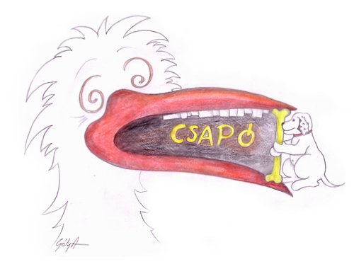
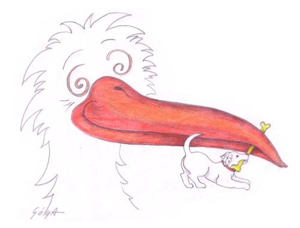
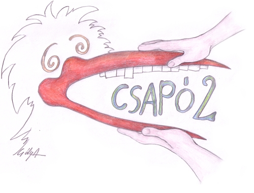
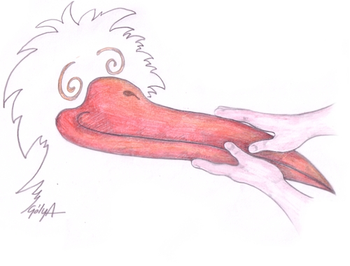

Csapó 1
Rendezői kommentár
Csapó egyes: Seriff és Gólya- kamera kész.. tessék!

Csatt
Oké álljunk le-leállás!
Hé gazdi, add vissza a csontom!

Csapó 2
Újra összeálltunk egy felvételhez..
Cigiszünet vége, Gólya kamera elé!
És tessék!

Csatt
Na jó valaki radírozz le rólam a kezeket, de gyorsan!
-Nekem erre nincs időm!
Jól van kész vagyunk, köszönöm. Szép volt emberek!
Kérem hagyjuk szabadon a kijáratot, átállunk a "leszállós" jelenetre.
Ez a csőr-csapó egyfajta baki szeretett volna lenni az animáció elején,
vagy éppen a végén(baki-parádé) végül elvetettük.
Úgy éreztük, hogy nem hiányzik belőle semmi, miután bekerült az utolsó szilánk animációja is, a Gólya érkezésébe.